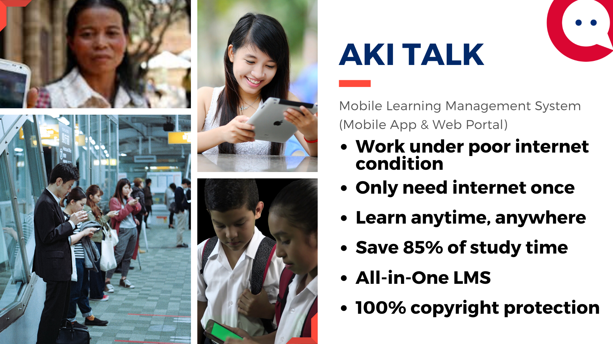

In the wake of global scale pandemic like COVID-19, digital learning is no longer a nice-to-have optional supplement but becomes an inevitable key component of formal schooling.
Aki Talk
Mobile Learning Platform
Aki Talk is an advanced digital Learning Management System (LMS) and Massive Open Online Courses (MOOC) system. It is the world’s first LMS and MOOC system that is built with a decentralized curriculum, non-linear pedagogy, contextual, and assimilation learning mode. Compared to the transitional on-campus learning mode and other LMS with a centralized curriculum and linear pedagogical design, Aki Talk is superior in almost all aspects of teaching, learning, and operations, including efficiency, effectiveness, student learning outcome (SLO), flexibility, mobility, system robustness, and connectivity resilience.

Unique Features
Aki Talk is derived from battle-tested proven language learning systems and internationally recognized psychological findings, tailored for the fragmentized and individualized digital society. Aki Talk will become the most efficient language learning tool for today’s environment.
With Aki Talk, in merely 15~30 seconds, a learner can master a useful expression for real. All learning short videos come from the everyday pragmatics for real life scenarios. Through Aki Talk’s 15-30 second video clips, a language learner can master everyday expressions and phrases useful in real life scenarios.